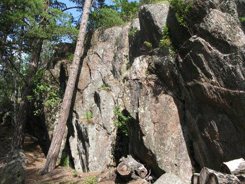

Fin ca 20 meter lång bouldervägg med ca 10 problem i klassen 5- till 6+. Någon 7'a finns också. Ingen mossa, men lite skräp, kan vara värt att ta med stålborsten. Bra landning och fin utsikt över sundet till Grinda. Kör färjan över till Ljusterö, följ vägen ca 8-10 minuter till en kiosk i en sväng, följ skyltar mot Tranvik. Vid vändplan går det att köra vidare på en privat väg. Har ni gott samvete så parkera här, annars fortsätt någon kilometer. Längst ut på udden, vid sundet mellan Ljusterö och Grinda ligger väggen. Man ser en parkbänk vid en mindre vändplan, nedanför där är det. Om ni kör in på den privata vägen, så tänk på vart ni parkerar.
Aug 2009 Funkar perfekt för segelklättraren, lägg er på svaj och bouldra en eftermiddag.
Copyright (C) Permission is granted to copy, distribute and/or modify this document under the terms of the GNU Free Documentation License, Version 1.3